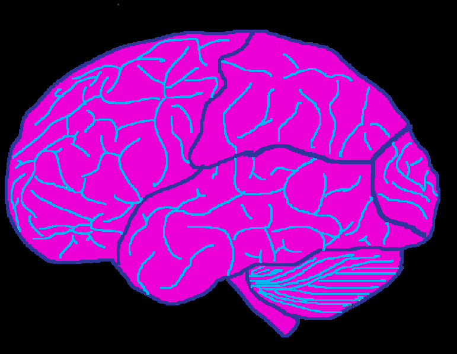
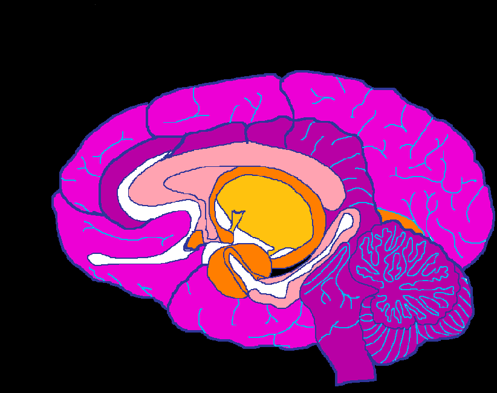

Cerebrum
Main part of the brain, responsible for higher functions like thought, action, and emotion.
Frontal Lobes
Decision-making, planning, problem-solving, and motor control.
Parietal Lobes
Processes sensory information like touch, temperature, and spatial awareness.
Temporal Lobes
Processes sound and is involved in memory and language comprehension.
Occipital Lobes
Responsible for visual processing.
Somatosensory Cortex
Processes touch and body sensations.
Cerebellum
Controls coordination, balance, and fine motor skills.

Motor Cortex
Controls voluntary movement.
Broca’s Area
Speech production and articulation.
Wernicke’s Area
Language comprehension.
Olfactory Bulb
Processes the sense of smell.
Amygdala
Regulates emotion, especially fear and aggression.
Thalamus
Relays sensory and motor signals to the cortex.
Hypothalamus
Regulates hunger, thirst, temperature, and emotions.
Hippocampus
Essential for forming new memories.
Pituitary Gland
Produces hormones and regulates growth and metabolism.
Medulla (Oblongata)
Controls breathing, heart rate, and reflexes.
Corpus Callosum
Connects the left and right hemispheres.
Pons
Relays information between the brain and spinal cord.
that code is just about perfect, now fix the backroung color, and add a title "Creative Brain Project" below that, slightly smaller write "AP psychology" and bellow that, even smaller, write "- Abram Jack Sparrow" also add a disclaimer to the bottom of the page that says "some labels may be slightly misplaced, the coding was difficult and i tried my best to make it as accurate as possible"